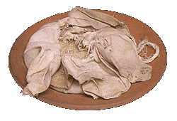
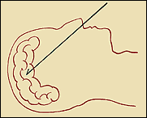

One of the embalmer's men makes a cut in the left side of the body and removes many of the internal organs. It is important to remove these because they are the first part of the body to decompose.

The liver, lungs, stomach and intestines are washed and packed in natron which will dry them out. The heart is not taken out of the body because it is the centre of intelligence and feeling and the man will need it in the afterlife.

A long hook is used to smash the brain and pull it out through the nose.
Next...